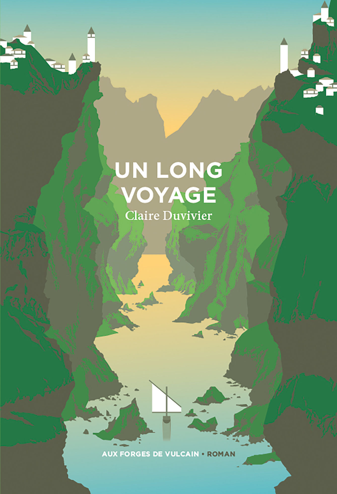
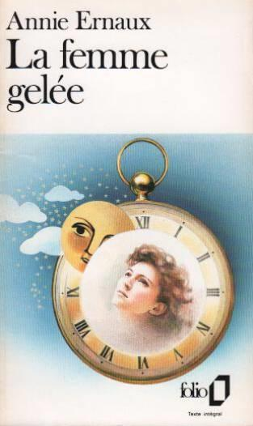
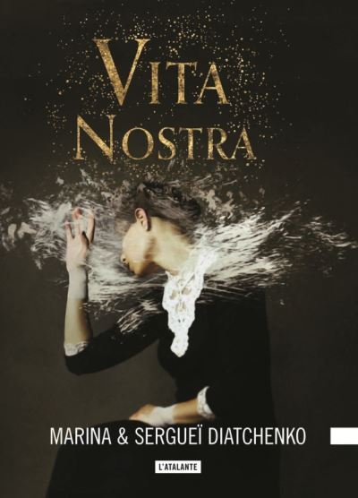

Chaque fin d’année, j’aime bien réaliser un petit bilan de mes lectures préférées des douze mois précédents (leur année de sortie n’ayant aucune espèce d’importance). Du coup, si je devais ne retenir que trois livres lus en 2021, ce serait probablement ceux-ci :
Tout d’abord, Un long voyage, par Claire Duvivier : un roman de fantasy qui en dit énormément avec une économie de moyens qui surprend. Loin du cliché de la saga en dix-sept épisodes kilométriques, c’est un vrai bonheur de lecture dans un univers d’une grande originalité. Plusieurs mois plus tard, il me laisse encore avec des images plein la tête et l’envie d’y retourner. Pour rester dans cet esprit, j’ai donc hâte, très hâte, de me lancer dans la double trilogie de La tour de garde, dont les deux premiers tomes (Citoyens de demain, par Claire Duvivier et Le sang de la cité, par Guillaume Chamanadjian) sont sortis cette année avec un succès certain.
Ensuite, La femme gelée, par Annie Ernaux : une autobiographie étouffante tant sur le fond que sur la forme, sortie il y a plus de quarante ans et qui n’a pourtant pas vieilli. J’y repense souvent et je ne suis pas près de l’oublier. C’est le troisième livre de l’autrice française que je lis, après La place et Mémoire de fille, et je suis à chaque fois frappé par sa démarche et la justesse de ses propos.
Enfin, Vita Nostra, par Marina et Sergueï Diatchenko : une histoire étrange et inquiétante, qui a réussi à m’intriguer, me passionner et me révolter, sans parler d’une irrépressible envie d’en parler à tout le monde. C’est avec ce roman que j’ai commencé 2021 et j’aurais difficilement pu rêver mieux. Le second tome du cycle des Métamorphoses, Numérique, sur lequel je me suis jeté dès sa sortie, m’a malheureusement nettement moins convaincu.
Trois livres ? C’est tout ? Non, car je pourrais difficilement achever l’année sans au moins évoquer Qui a peur de la mort ? de Nnedi Okorafor, roman post-apocalyptique teinté de magie au pouvoir évocateur puissant, ni La volonté de se battre, troisième tome de la trilogie de science-fiction Terra Ignota, d’Ada Palmer. Si cette série a ses détracteurs, je fais partie de celles et ceux pour qui elle coche toutes les cases (la suite sort en février : j’attends). Tout à fait en dehors de la science-fiction, le roman Les yeux rouges, de Myriam Leroy, inspiré du harcèlement dont cette dernière a été victime pendant plusieurs années, se révèle particulièrement marquant. J’ai aussi eu la bonne idée de ne pas oublier mon Iain M. Banks annuel, Le sens du vent, qui m’a rappelé pourquoi j’aime le cycle de la Culture. Un petit mot, enfin, pour Le dernier des Yakuzas (du journaliste américain Jake Adelstein) et pour Les cieux pétrifiés (dernier tome des Livres de la Terre fracturée, de N.K. Jemisin), qui m’ont aussi beaucoup plu dans leurs genres très différents.
L’année qui s’achève m’aura une fois encore réservé de belles pépites. Force est pourtant de constater que se lancer dans un livre reste une forme de jeu de hasard et qu’on ne sait jamais vraiment prédire le sort qu’il nous réserve. Ce qui m’a manqué cette année, c’est peut-être “la” bonne surprise venue de nulle part, ce livre inattendu entamé sans trop savoir pourquoi qui me happe sans crier gare. Pas un chef d’œuvre, pas un classique instantané, juste un livre écrit pour moi. C’est ce que je nous souhaite pour 2022, parce que ça fait toujours plaisir.